首页 > 编程笔记
Vue环境搭建教程（基于VSCode）
工欲善其事，必先利其器，选择一个合适的开发工具，能显著地提高学习和开发效率。目前使用率比较高的前端开发工具有以下几种。
VS Code 功能非常强大，界面简洁明晰，操作方便快捷，设计得很人性化。软件主要改进了文档视图，完善了对 Markdown 的支持。
HBuilder 的优点是对其他语言的强大支持和开发 Web App 等功能，强大到“没朋友”。在语法提示、转到定义、重构、调试等方面都非常高效。
Sublime Text 3 的优点是轻量级且功能强大，优雅小巧且启动速度快，有着丰富的第三方支持，能够满足各种各样的扩展。其缺点是不便于项目的管理等，而且代码提示不如 HBuilder 强大。
WebStorm 的新版本也添加了对 ES6 的支持，内建了服务器调试功能，目前已经被广大中国 JavaScript 开发者誉为“Web前端开发神器”、“最强大的HTML5编辑器”、“最智能的JavaScript IDE”等。
WebStorm 与 IntelliJ IDEA 同源，继承了 IntelliJ IDEA 强大的 JavaScript 部分的功能。
上面罗列的是目前比较常用的前端开发工具，当然还有很多其他的优秀开发工具，项目团队可以根据实际情况，选择最合适的开发工具。
本节介绍如何安装及配置Visual Studio Code 软件，并且使用它基于 Vue.js 快速开发猜数字游戏案例，体验 VS Code 工具的基本使用和基于 Vue.js 开发前端的基本流程。
这里选择的是 Windows 64 的 User Installer 版本，文件名称是 VSCodeUserSetup-x64-1.33.1.exe。
打开 VS Code 开发工具，如下图所示。
单击图 2 左边的 Extensions 图标，或按快捷键 Ctrl+Shift+X，打开 VS Code 的 Extensions 窗口，在输入框中输入 Live Server，选中 Live Server 安装选项，如图 3 所示。
再单击 Install 按钮，完成 Live Server 插件的安装。如果没有异常，并且在 Extensions 中的 Live Server 选项中没有 Install 按钮，则表明基本安装成功。
同安装 Live Server 插件一样，打开 VS Code 的 Extensions 窗口，在输入框中输入 Vetur，选中 Vetur 安装选项，单击 Install 按钮，即可完成 Vetur 插件的安装。
第二步，用文本编辑器打开解压目录 vue-devtools-master 的 shells/Chrome/manifest.json 文件，将代码
第三步，在解压目录下，运行 npm run build 命令，构建 vue-devtools 插件，结果如图 6 所示。
第四步，打开 Chrome 浏览器，选择菜单“更多程序”→“扩展程序”，打开扩展程序界面，如图 7 所示。
单击“加载已解压的扩展程序”按钮，选择 vue-devtools-master/shells/Chrome 目录，将 vue-devtools 插件安装到 Chrome 浏览器，安装结果如图 8 所示。
玩家根据提示，在输入框中输入自己所猜的数字，单击“猜一猜”按钮，程序就会比较玩家输入的数字同页面随机生成的数字是否一样。如果玩家输入的数字比随机数字小，提示“你猜的数字太小，请往大的猜”；如果玩家输入的数字比随机数字大，则提示“你输入的数字太大，请往小的猜”。玩家按照提示，在页面上重新输入一个数字，再单击“猜一猜”按钮，程序继续比较和提示，直到玩家输入的数字等于随机生成的数字，此时页面提示“恭喜你猜中了，一共猜了N次”。
1) Visual Studio Code
Visual Studio Code 简称 VS Code，是微软在 2015 年发布的一款针对编写现代 Web 和云应用的跨平台源代码编辑器。VS Code 功能非常强大，界面简洁明晰，操作方便快捷，设计得很人性化。软件主要改进了文档视图，完善了对 Markdown 的支持。
2) HBuilder
HBuilder 是国产的一款前端开发工具，而且是免费的，对于英语不好的前端工程师是一个很大的优势，是前端开发者的首选。HBuilder 的优点是对其他语言的强大支持和开发 Web App 等功能，强大到“没朋友”。在语法提示、转到定义、重构、调试等方面都非常高效。
3) Sublime Text 3
Sublime Text 是一个轻量级的编辑器，也支持各种编程语言。Sublime Text 所有的功能都支持插件，而且快捷键十分好用，可以极大地减小开发工作的强度，使用 Sublime Text 就是要使用其快捷键和插件。Sublime Text 3 的优点是轻量级且功能强大，优雅小巧且启动速度快，有着丰富的第三方支持，能够满足各种各样的扩展。其缺点是不便于项目的管理等，而且代码提示不如 HBuilder 强大。
4) WebStorm
WebStorm 是 JetBrains 公司旗下的一款 JavaScript 开发工具，官方提供插件支持，满足许多不会配置的初学者，如 ESlint、词法高亮、emmet、CSS预处理器。WebStorm 的新版本也添加了对 ES6 的支持，内建了服务器调试功能，目前已经被广大中国 JavaScript 开发者誉为“Web前端开发神器”、“最强大的HTML5编辑器”、“最智能的JavaScript IDE”等。
WebStorm 与 IntelliJ IDEA 同源，继承了 IntelliJ IDEA 强大的 JavaScript 部分的功能。
上面罗列的是目前比较常用的前端开发工具，当然还有很多其他的优秀开发工具，项目团队可以根据实际情况，选择最合适的开发工具。
本节介绍如何安装及配置Visual Studio Code 软件，并且使用它基于 Vue.js 快速开发猜数字游戏案例，体验 VS Code 工具的基本使用和基于 Vue.js 开发前端的基本流程。
安装配置开发环境
安装配置 VS Code 比较简单，主要步骤是下载并安装 VS Code 软件，再安装高效率的插件。为了方便测试，这里除了介绍 VS Code 的安装配置外，还会介绍在 Chrome 浏览器中如何安装 vue-devtools 插件，以便开发调试 Vue.js 项目。1、安装配置VS Code
1) 下载VS Code安装软件
用浏览器打开 https://code.visualstudio.com/ 页面，单击 Download 按钮，进入下载页面，选择适合自己计算机环境的版本下载，如图 1 所示。
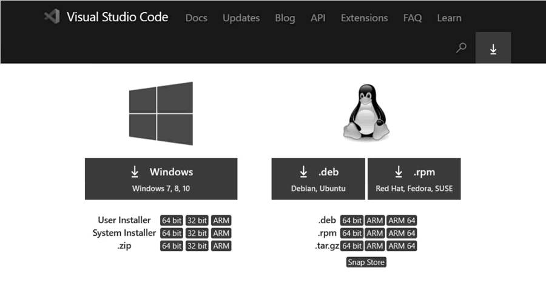
图 1 VS Code下载页面
图 1 VS Code下载页面
这里选择的是 Windows 64 的 User Installer 版本，文件名称是 VSCodeUserSetup-x64-1.33.1.exe。
2) 安装VS Code
双击已下载的安装文件（VSCodeUserSetup-x64-1.33.1.exe），直接运行安装。安装过程比较简单，这里就不再介绍。3) 安装Live Server插件
Live Server 插件能方便开发者实时浏览页面的显示效果，接下来介绍如何在 VS Code 中安装 Live Server 插件。打开 VS Code 开发工具，如下图所示。
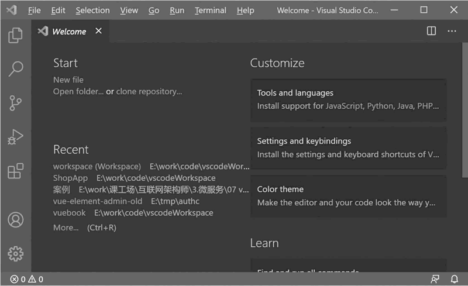
图 2 VS Code启动界面
图 2 VS Code启动界面
单击图 2 左边的 Extensions 图标，或按快捷键 Ctrl+Shift+X，打开 VS Code 的 Extensions 窗口，在输入框中输入 Live Server，选中 Live Server 安装选项，如图 3 所示。
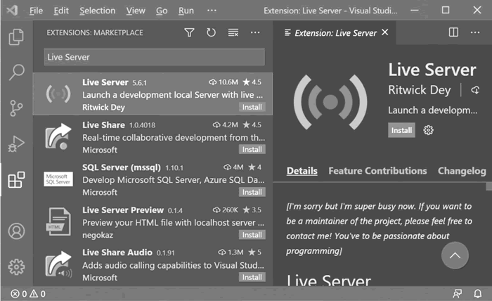
图 3 Live Server安装界面
图 3 Live Server安装界面
再单击 Install 按钮，完成 Live Server 插件的安装。如果没有异常，并且在 Extensions 中的 Live Server 选项中没有 Install 按钮，则表明基本安装成功。
4) 安装Vetur插件
Vetur 是一个可以运行在 VS Code 中的插件，支持 .vue 文件的语法高亮显示，支持 template 模板，还支持大多数主流的前端开发脚本和插件，例如 Sass 和 TypeScript。接下来在 VS Code 中安装 Vetur 插件。同安装 Live Server 插件一样，打开 VS Code 的 Extensions 窗口，在输入框中输入 Vetur，选中 Vetur 安装选项，单击 Install 按钮，即可完成 Vetur 插件的安装。
2、安装配置vue-devtools插件
vue-devtools 是一款运行在 Chrome 浏览器中的插件，能方便开发者开发和调试 Vue.js 应用。本节后面的案例会结合这个插件进行调试说明，同时在开发过程中，它也是一个很好的调试工具。接下来介绍 vue-devtools 插件的安装。1) 下载vue-devtools插件源码
在浏览器中打开 https://github.com/vuejs/vue-devtools，选择 master 分支，单击 Code 按钮，然后在下拉菜单中单击 Download ZIP 选项，下载 vue-devtools 源码。这里下载的文件是 vue-devtools-dev.zip，下载界面如图 4 所示。
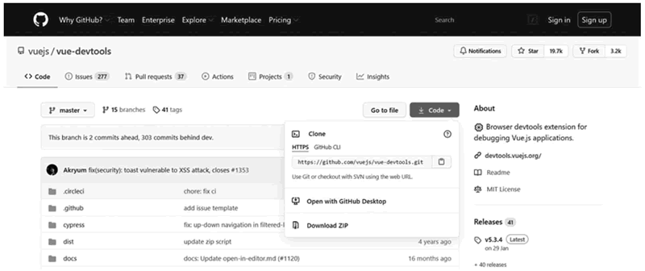
图 4 vue-devtools下载界面
图 4 vue-devtools下载界面
2) 编译vue-devtools源码
第一步，解压 vue-devtools 源码压缩文件，打开一个 cmd 窗口，切换到 vue-devtools-master 解压目录。输入 npm install 命令，安装 vue-devtools 所需要的依赖，如图 5 所示。
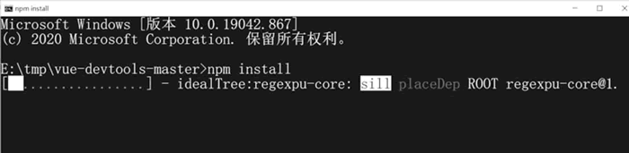
图 5 安装依赖
图 5 安装依赖
第二步，用文本编辑器打开解压目录 vue-devtools-master 的 shells/Chrome/manifest.json 文件，将代码
"persistent"：false改成"persistent"：true。第三步，在解压目录下，运行 npm run build 命令，构建 vue-devtools 插件，结果如图 6 所示。
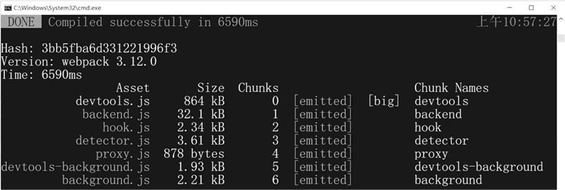
图 6 构建vue-devtools
图 6 构建vue-devtools
第四步，打开 Chrome 浏览器，选择菜单“更多程序”→“扩展程序”，打开扩展程序界面，如图 7 所示。
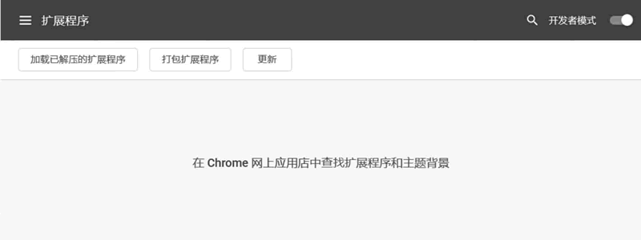
图 7 扩展程序
图 7 扩展程序
单击“加载已解压的扩展程序”按钮，选择 vue-devtools-master/shells/Chrome 目录，将 vue-devtools 插件安装到 Chrome 浏览器，安装结果如图 8 所示。
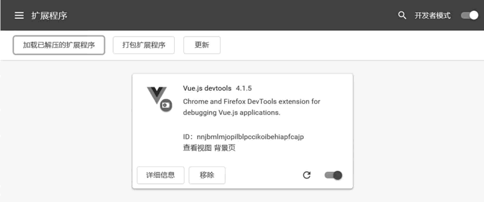
图 8 vue-devtools安装结果
图 8 vue-devtools安装结果
实现猜数字游戏
安装好了开发环境，接下来实现一个简单的猜数字游戏，验证开发环境是否搭建完整，同时快速体验 Vue.js 在前端页面中的使用。1、功能说明
猜数字游戏的操作比较简单，在打开一个页面时会随机生成一个 1~10 的整数，并且显示页面，如图 9 所示。
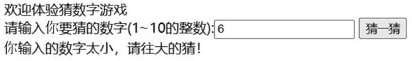
图 9 猜数字游戏界面
图 9 猜数字游戏界面
玩家根据提示，在输入框中输入自己所猜的数字，单击“猜一猜”按钮，程序就会比较玩家输入的数字同页面随机生成的数字是否一样。如果玩家输入的数字比随机数字小，提示“你猜的数字太小，请往大的猜”；如果玩家输入的数字比随机数字大，则提示“你输入的数字太大，请往小的猜”。玩家按照提示，在页面上重新输入一个数字，再单击“猜一猜”按钮，程序继续比较和提示，直到玩家输入的数字等于随机生成的数字，此时页面提示“恭喜你猜中了，一共猜了N次”。
2、实现猜数字游戏
了解了猜数字游戏的大体功能后，接下来开始按步骤实现猜数字游戏。1) 创建工作目录
在工作计算机上，创建一个空目录作为工作目录，这里是在 E:/work/code/vscodeworkspace 目录下，创建 vuebook 目录作为所有案例的工作目录。2) 在工作目录下规划基本子目录
为了方便管理，在工作目录下分别创建 html 目录和 static/js 目录。html 目录用来存放本书案例中的所有 html 文件，static/js 目录用来存放本书案例用到的所有 JS 文件。3) 用VS Code打开工作目录
打开 VS Code 编辑器，单击 VS Code 编辑器上的 File 菜单，选中前面创建的 vuebook 文件夹，如图 10 所示。
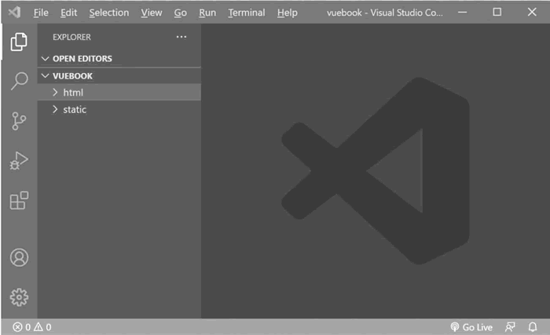
图 10 案例工作目录
图 10 案例工作目录
4) 添加Vue.js文件
在 static/js 目录下，创建 Vue.js 文件。打开浏览器，打开 https://cdn.jsdelivr.net/npm/vue/dist/vue.js 链接，将页面显示的内容全部复制到 Vue.js 文件中。5) 创建猜数字游戏页面
在 html 目录下，创建猜数字游戏 .html 文件，代码如下：
<!DOCTYPE html>
<html lang="en">
<head>
<meta charset="UTF-8">
<meta http-equiv="X-UA-Compatible" content="IE=edge">
<meta name="viewport" content="width=device-width, initial-scale=1.0">
<title>猜数字游戏</title>
<!-- 引入 Vue.js -->
<script type="text/javascript" src="../static/js/Vue.js"></script>
</head>
<body>
<div id="app">
欢迎体验猜数字游戏<br />
请输入你要猜的数字(1~10的整数)：<input type="text" v-model="guessNumber" />
<input type="button" value="猜一猜" @click="guess">
<div>
{{message}}
</div>
</div>
<script type="text/javascript">
// 创建Vue.js对象
const vm = new Vue({
el: '#app', // 绑定 app div
data: { // 定义 data 属性
randomNumber: 0,
guessNumber: "",
times: 0,
message: ""
},
created() { // 定义创建函数，在创建 Vue.js 对象的时候自动执行
let random = parseInt((Math.random() * 10000));
this.randomNumber = random % 10 + 1;
},
methods: { // 定义事件方法
guess() {
this.times++;
this.guessNumber = parseInt(this.guessNumber);
if (this.guessNumber < this.randomNumber) {
this.message = '你输入的数字太小，请往大的猜！';
} else if (this.guessNumber > this.randomNumber) {
this.message = '你输入的数字太大，请往小的猜！';
} else {
this.message = "恭喜你猜中了！共猜了" + this.times + "次";
}
}
}
});
</script>
</body>
</html>
6) 运行游戏案例
右击 html/猜数字游戏.html 文件，在弹出的菜单中选中 Open with Live Server 选项，启动 Live Server，如图 11 所示，VS Code 会自动启动浏览器，进入猜数字游戏界面。
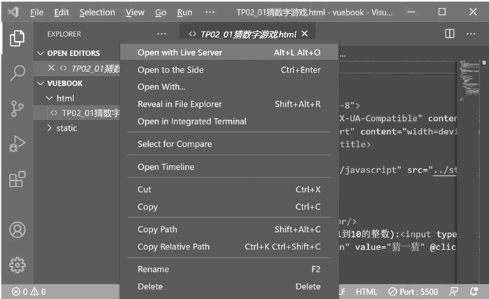
图 11 启动Live Server
图 11 启动Live Server
7) 基于vue-devtools插件，查看Vue.js对象
在 Chrome 浏览器中，按 F12 键，单击 Vue 选项，再单击视图中的组件，这样就可以查看该组件对象的 data 数据了，如图 12 所示。
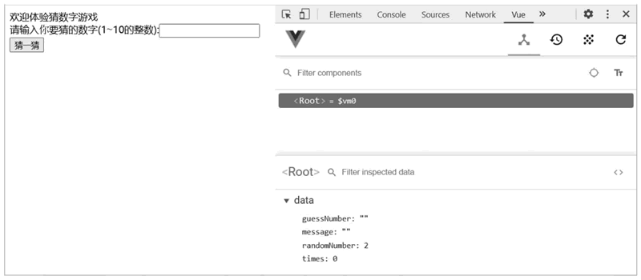
图 12 vue-devtools调试
图 12 vue-devtools调试
关注公众号「站长严长生」，在手机上阅读所有教程，随时随地都能学习。内含一款搜索神器，免费下载全网书籍和视频。

微信扫码关注公众号